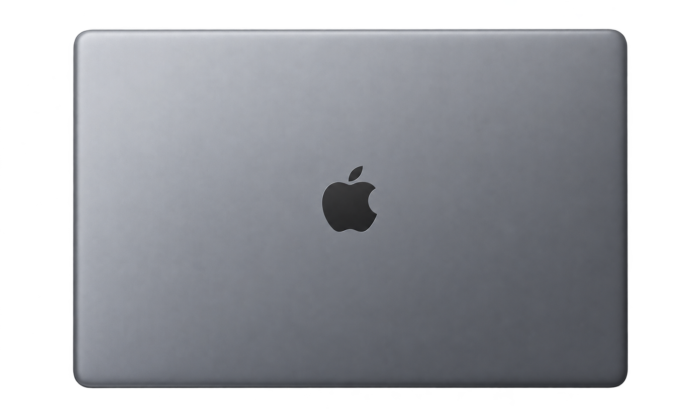

CUSTOM STIKER & LIVE MOCKUP STUDIO
Posisikan stiker langsung pada laptop, botol tumbler, tablet, atau HP. Geser, perbesar, putar, dan cek hasil tempel sebelum pesanan dicetak.
+ UNGGAH GAMBAR DARI PERANGKAT
Format PNG, JPG, SVG, WebP (Rekomendasi PNG transparan)

AKSESIBILITAS KONTROL KEYBOARD & MOUSE:
Pilih stiker dengan klik mouse atau tombol Tab. Geser posisi dengan Tombol Panah (tahan Shift untuk langkah cepat). Perbesar/perkecil dengan + / -. Putar dengan R. Hapus dengan tombol Delete / Backspace. Tekan Esc atau klik area luar mockup untuk menyembunyikan garis frame.
KOLEKSI STIKER RESMI STIKO
Pilih desain favorit untuk langsung ditempel di studio mockup atau masukkan ke pesanan Anda.
STANDAR KUALITAS BAHAN STIKER KAMI
Spesifikasi asli material yang kami gunakan untuk memastikan stiker tahan air dan tahan lama.
100% TAHAN AIR
Bahan vinyl waterproof aman dicuci pada tumbler, terkena hujan pada helm, atau tumpahan air minum.
LAMINASI ANTI-GORES
Lapisan pelindung matte atau glossy melindungi tinta dari gesekan saat laptop disimpan dalam tas.
POTONGAN DIE-CUT RAPI
Pisau potong presisi mengikuti lekuk grafis stiker dengan tepian putih rapi tanpa sobekan kasar.
BEBAS RESIDU LEM
Perekat berkualitas tinggi yang dapat dilepas tanpa meninggalkan bekas lem lengket pada casing perangkat.
MEMBERDAYAKAN KREATIVITAS STIKER
STICKO adalah platform stiker yang menghubungkan kreativitas desain grafis dengan visualisasi produk fisik. Kami membantu kreator mengubah ide menjadi stiker berkualitas tinggi dan memvisualisasikannya secara nyata pada perangkat sebelum dicetak.
Menyediakan simulasi penempelan stiker yang presisi pada berbagai macam barang (laptop, tumbler, tablet, casing HP) tanpa keraguan dan tanpa biaya tak terduga.
IKUTI PERJALANAN STIKO
Dapatkan inspirasi desain stiker terbaru, sneak peek produksi, dan video tutorial penataan stiker: